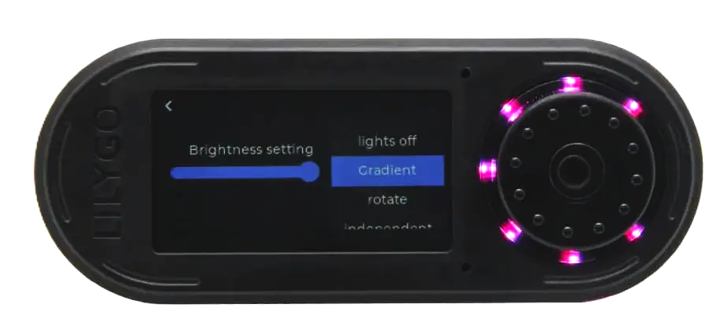

Firmware Bruce
El "cerebro" del dispositivo. Bruce es un firmware de código abierto basado en MicroPython y C++ diseñado para convertir el ESP32 en una herramienta versátil de auditoría de seguridad.
Repositorio Oficial
Bruce se mantiene activamente en GitHub. Aquí puedes descargar la última versión binaria, ver el código fuente o contribuir al proyecto.
Ir al GitHub Oficial 🔗Características del Firmware Bruce
¿Qué hace Bruce?
Bruce transforma tu T-Embed en una suite completa de herramientas de pentesting inalámbrico. Desarrollado por la comunidad, integra múltiples funcionalidades que normalmente requerirían varios dispositivos diferentes.
Módulos Principales:
WiFi Arsenal
- Escaneo de redes y puntos de acceso
- Ataque de Deautenticación (Deauth)
- Beacon Spam (inundación de SSIDs)
- Análisis de paquetes en tiempo real
- Captura de handshakes WPA/WPA2
Bluetooth Testing
- Escaneo BLE (Low Energy)
- Sniffing de dispositivos Classic
- Spoofing de identidad Bluetooth
- Detección de beacons ocultos
Sub-GHz & RF
- Análisis de señales 315/433/868 MHz
- Grabación y reproducción de señales
- Clonación de mandos a distancia
- Jamming de frecuencias ISM
Requiere módulo CC1101 externo
NFC/RFID
- Lectura de tarjetas Mifare/NTAG
- Clonación de tarjetas RFID
- Emulación de tags NFC
- Ataque de fuerza bruta a claves
Requiere módulo PN532 externo
Comparativa de Firmwares
| Firmware | WiFi | Bluetooth | Sub-GHz | NFC | Interfaz |
|---|---|---|---|---|---|
| Bruce | Completo | BLE + Classic | Si (CC1101) | Si (PN532) | TFT + Encoder |
| Marauder | Avanzado | BLE | No | No | CLI + TFT |
| Nemo | Básico | BLE | Limitado | No | TFT Básico |
Casos de Uso Prácticos
Auditoría WiFi
Evalúa la seguridad de tu propia red identificando puntos débiles, dispositivos no autorizados y configuraciones inseguras.
- Detección de redes ocultas
- Análisis de canales
- Identificación de clientes
Pentesting Bluetooth
Descubre vulnerabilidades en IoT, wearables y sistemas de audio.
- Enumeración de servicios BLE
- Detección de beacons
- Test de emparejamiento
Análisis RF
Estudia el espectro radioeléctrico para identificar dispositivos de domótica y alarmas.
- Captura de señales
- Análisis de protocolos ISM
- Replay attacks (simulados)
Educación
Herramienta perfecta para mostrar conceptos abstractos de forma visual e interactiva.
- Demostraciones en vivo
- Laboratorio portátil
- Aprendizaje práctico
Aviso Legal y Uso Responsable
El contenido de esta guía tiene ÚNICAMENTE fines educativos y de investigación en seguridad.
Prohibido
- Ataques a redes ajenas sin permiso
- Interferencia de comunicaciones
- Acceso no autorizado
Permitido
- Auditorías de redes propias
- Pentesting autorizado
- Educación en entornos controlados
Legislación: El acceso no autorizado a sistemas informáticos es delito (Art. 197 CP). El desconocimiento de la ley NO exime de responsabilidad.
Recursos y Enlaces
Documentación
Herramientas
Comunidad
Simulador de Interfaz
Así se ve el menú principal de Bruce en la pantalla del T-Embed.
¡Pruébalo! Toca en la rueda para navegar.

(Haz clic en la parte superior/inferior de la rueda para moverte, y en el centro para aceptar, o usa las flechas del teclado y la tecla enter)